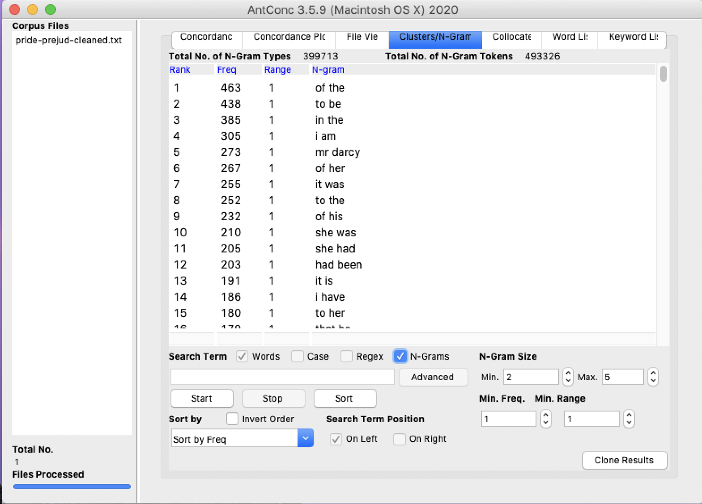

For this assignment, I wanted to look at and analyze books that are considered to be “classics”. I think most people have read one of these if not more because they are very commonly read in middle or high school. The well-known books I selected for this assignment include “Great Expectations”, “Pride and Prejudice”, “The Adventures of Tom Sawyer” and “The Great Gatsby”. All of these books were published around the same time period. Pride and Prejudice was the first to be published in 1813, then Great Expectations (1861) and The Adventures of Tom Sawyer (1876) were published within 15 years of each other and finally, the Great Gatsby was the most recent of the four and was published in 1925. There must be something special within the text of these four titles because they are still read today and analyzed for educational purposes. After analyzing these texts, I wondered what makes these books classics. The text I looked at must have some value or timeless quality to withstand the test of time. The first text I wanted to mention is from Great Expectations. I first put the text into AntConc with an n-gram size 2 as the minimum and 5 as the maximum. These results alone didn’t give any substantial information by itself. The most common two-word phrase was “of the” in this book’s text. This particular information wasn’t fascinating until I saw the other text in AntConc. This was interesting to me because all of the other text had “of the” as the most common two-word phrase. It doesn’t mean that much seeing it in one text but for all four text to have “of the” as the most common phrase, I thought that was cool. In Great Expectations, I also noticed a lot of the word “I” showing up. For example, “I had” and “I was” were top phrases found on AntConc. The Adventures of Tom Sawyer results were very similar to Great Expectations. I think this is solely based on the publishing dates of these books. The second text I looked at on AntConc was Pride and Prejudice. I wasn’t expecting this text to be too similar to the other text because it’s a bit older. With 2 as the minimum and 5 as the maximum I noticed a lot of phrases with her/she pronouns. This makes sense because the main character is a female, and she is being talked about or talked to the majority of the time. If I am comparing this book to the latest published book which was The Great Gatsby, they are the least similar of any of the books. I think this is because there is such a huge gap in time between the published dates of the two books. The phrases that showed up for the Great Gatsby on AntConc looked like something I could see in a book today as opposed to Pride and Prejudice. The last thing that I did on AntConc was move the min to 4 and max to 5 on the n-gram size for the different text and the results were again quite similar. Three out of four books had the phrase “I don’t know” rank number one as the most frequent four-word phrase. Those included were the oldest text of the four, meaning The Great Gatsby was the only book who didn’t have that phrase as number one. This result could be due to the timing that the book was published and possibly the writing style had begun to change.  VS. Out of the two tools given to analyze text, my favorite is Voyant. This tool makes it really easy to see what the text is saying or showing. Also, the overall results are more pleasing to the eye. The results after putting all the text through Voyant was not very surprising to me. The word “said” was in the top 3 for all the text which makes sense because they are all stories. The last thing that stood out to me that they all had in common was the names of each book. This makes sense to see the main character names as one of the most frequently used words. To look at all these classics and compare the text and phrases was way more fascinating than I thought. After looking at the results I had more questions than before, and it made me wonder why. These tools are both useful and way more helpful than you would think. When reading a book like these you don’t think “wow, I see the phrase “of the” a lot”. I think these tools made me want to pay more attention to text when I’m reading. In my particular situation, a great deal of my results didn’t leave me with a lot of questions. Overall, I don’t know what I expected the results to be, but I was still shocked and wondered why all four books most frequently used two-word phrase was “of the”. Why do you think so?